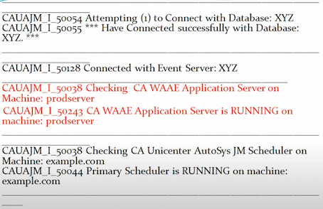

3 Autosys Components, Configuration & Validation
1 CA Worlad Automation AE Components
CA Workload Automation AE Components
- Event server (database)
- Application server
- Web server
- Scheduler
- Agent
- Client
Event Server
Dual Event Server
Dual event server is nothing but having two events servers like we can configure see a workload automation AE instance to run using Servers and this configuration is called dual event server.
Two servers are synchronized to maintain identical data and this data is use when one event server is down
Application Server :
The application server acts as the communication interface between the event server and the client utilities.
It receives requests from the client utilities, queries the event server, and returns the responses to the client utilities.
Scheduler :
When you start the scheduler, it continually scans the database for events to process.
High Avaialability
-
Agent
- agentwill allow us to automate monitor and manage workload on different operating environments
-
Client
- It will include command-line interfaces such as jil job information language auto
- Web Server
- Web server is used to host the web services
2 Checking Autosys System Configuration
autoflags
autoflags: Prints information about AutoSys and the system configuration.
options: -
-a: Displays all autoflags information to standard output.-iDisplays the AutoSys tape ID number to standard output.-oDisplays the operating system to standard output.-dDisplays the database type to standard output, either SYB for Sybase or ORA for Oracle.-vDisplays theAutoSys version number to standard output.-rDisplays theAutoSys release number to standard output.-hDisplays thehost-idto standard output to standard output.-nDisplays thehost-nameto standard output to standard output.
Example
autoflags -a
3 AIX SYB 11.3.6 1 coae38prodserver
How to check whether the Autosys is up or down
chk_auto_up
- This command Verifies status of the Unicenter AutoSys JM Scheduler and database.
- It determines if the Event Server (database) and the scheduler are running.
- This is the utility you can use for debugging of Autosys
chk_auto_up -r 111
Command gives Event server, Scheduler and Application server status as well.

3 chk_files Attribute
Verifv File Space Required to Start a job
chk_filesattribute- Unix file system
- Windows drive
- Alarm
n_retrys- MaxRestartTrys
- Default size in KB
- Sizes B.KB.G.M
Example on unix machine
insert job: job_unix_chk
job_type: CMD
machine: agentunix
command:
autorep -m agentunix
chk files: /tmp 100 /home 120
Example on windows server
insert_job: job_win_chk
job_type: CMD
machine: agentwin
command: "C:\Programs\powershel.ps1"
chk_files: "C:110 D:100"